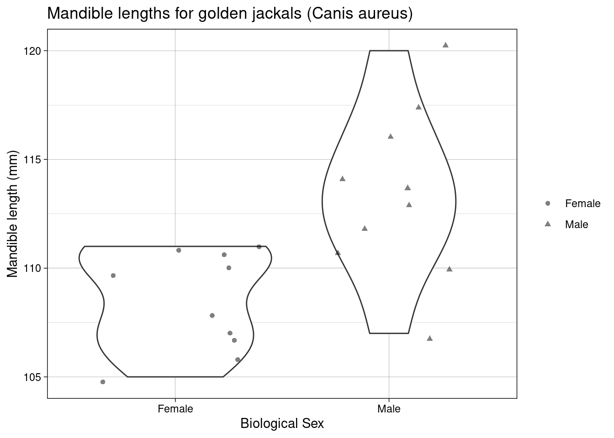
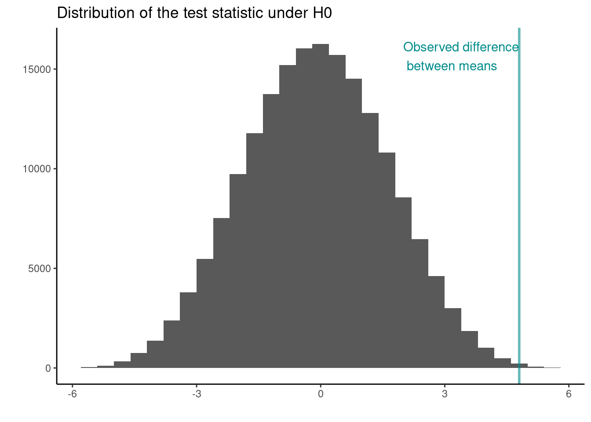

4 Introduction to the design and analysis of experiments
4.1 Learning Objectives
- Identify the following
- experimental unit
- observational units
- List and describe the three main principals of experimental design
- Randomization
- Replication
- Blocking
- Calculate Sums of Squares (between and within groups) given the observations
- Define and state the appropriate degrees of freedom in a one-way ANOVA scenario
- Calculate the F-statistics given the appropriate Sums of Squares and degrees of freedom
- Interpret and discuss a given p-value in the context of a stated hypothesis test
- Explain between group and within group variation
- Describe a Completely Randomised (experimental) Design
- Carry out linear regression in
Rwith one categorical explanatory variable (one-way ANOVA) and draw the appropriate inference - Communicate statistical concepts and experimental outcomes clearly using language appropriate for both a scientific and non-scientific audience
4.2 Key phrases
Experimental unit Smallest portion of experimental material which is independently perturbed
Treatment The experimental condition independently applied to an experimental unit
Observational unit The smallest unit on which a response is measured. If one measurement is made on each rat: Observational unit = Experimental unit. If Multiple measurements are made on each rat: Each experimental unit has >1 observational unit (pseudo- or technical replication).
4.3 Three key principles:
4.3.1 Replication
- Biological replication: each treatment is independently applied to each of several humans, animals or plants
- To generalize results to population
- Technical replication: two or more samples from the same biological source which are independently processed
- Advantageous if processing steps introduce a lot of variation
- Increases the precision with which comparisons of relative abundances between treatments are made
- Pseudo-replication: one sample from the same biological source, divided into two or more aliquots which are independently measured
- Advantageous for noisy measuring instruments
- Increases the precision with which comparisons of relative abundances between treatments are made
4.3.2 Randomization
Protects against bias
Plan the experiment in such a way that the variations caused by extraneous factors can all be combined under the general heading of “chance”.
- Ensures that each treatment has the same probability of getting good (or bad) units and thus avoids systematic bias
- random allocation can cancel out population bias; it ensures that any other possible causes for the experimental results are split equally between groups
typically statistical analysis assumes that observations are independent. This is almost never strictly true in practice but randomisation means that our estimates will behave as if they were based on independent observations
4.3.3 Blocking
Blocking helps control variability by making treatment groups more alike. Experimental units are divided into subsets (called blocks) so that units within the same block are more similar than units from different subsets or blocks.
Blocking is a technique for dealing with nuisance factors. A nuisance factor is a factor that has some effect on the response, but is of no interest (e.g., age class).
4.4 One-Way Analysis of Variance (ANOVA)
4.4.1 Between group SS (SSB)
The idea: Assess distances between treatment (surgical condition) means relative to our uncertainty about the actual (true) treatment means.

add up the differences: -1.192 + -0.703 + 1.895 = 0. This is always the case!
So adding up the differences: -1.192 + -0.703 + 1.895 = 0. Not a great way to measure distances!
Sums of Squares?
-1.192^2 + -0.703^2 + 1.895^2
add up the squared differences? but… there are 4 observations in each group (treatment)
4\(\times\)(-1.192)^2 + 4\(\times\)(-0.703)^2 + 4\(\times\)(1.895)^2
This is the Between Groups Sums of Squares or the Between group SS (SSB)
So the Between group SS (SSB) = 22.02635
Adding up the differences: -1.192 + -0.703 + 1.895 = 0. This is always the case and that itself gives us information…
We only need to know two of the values to work out the third!
So we have only 2 bits of unique information; SSB degrees of freedom = 2
4.4.2 Within group SS (SSW)
The Within group SS (SSW) arises from the same idea:
To assess distances between treatment (surgical condition) means relative to our uncertainty about the actual (true) treatment means.
Procedure:
- Observation - Treatment mean
- Square the difference
- Add them up!
Within group SS (SSW) unexplained variance

4.4.3 F-statistic
Recall the Between group SS (SSB) = 22.02635
So mean SSB = 22.02635 / 2
The within group SS (SSW) = 6.059075
Here we have 3\(\times\) 3 bits of unique information: within groups degrees of freedom is 9.
So mean SSW = 6.059/9
Consider the ratio \({\frac{{\text{variation due to treatments}}}{{\text{unexplained variance}}}} = {\frac{{\text{ mean between-group variability}}}{{\text{mean within-group variability}}}}\) \(=\frac{\text{mean SSB}}{\text{mean SSW}}\) \(=\frac{\text{MSB}}{\text{MSW}}\) = \(=\frac{\text{experimental variance}}{\text{error variance}}\) 16.3586975
This is the F-statistic!
4.4.4 Degrees of freedom (DF)
Essentially statistical currency (i.e., unique bits of information). So in the example above we have 3 treatment groups and if we know the mean of two we know the third (i.e., 2 unique bits of info) so SSB df = 2. Now, for SSW df. We have 12 observations (4 in each group); we know the treatment means so if we have three of those observed values in each group we know the fourth: 12 - 3 = 9 (i.e., number of observations - number of df lost due to knowing the cell means).
4.5 Analysis of a Completely Randomised Design in R: aov() and lm()
## # A tibble: 3 x 2
## Surgery avg
## <fct> <dbl>
## 1 C 8.46
## 2 P 8.95
## 3 S 11.54.5.1 aov()
## Df Sum Sq Mean Sq F value Pr(>F)
## Surgery 2 22.026 11.013 16.36 0.00101 **
## Residuals 9 6.059 0.673
## ---
## Signif. codes: 0 '***' 0.001 '**' 0.01 '*' 0.05 '.' 0.1 ' ' 1Inference
Hypothesis: We test the Null hypothesis, \(H_0\), population (Surgery) means are the same on average verses the alternative hypothesis, \(H_1\), that at least one differs from the others!
Probability of getting an F-statistic at least as extreme as the one we observe (think of the area under the tails of the curve below) p-value Pr(>F)= 0.001 tells us we have sufficient evidence to reject \(H_0\) at the 1% level of significance

4.5.2 lm()
lm()
Inference
## Estimate Std. Error t value Pr(>|t|)
## (Intercept) 8.4600 0.4102531 20.6214144 6.930903e-09
## SurgeryP 0.4900 0.5801856 0.8445574 4.202408e-01
## SurgeryS 3.0875 0.5801856 5.3215734 4.799872e-04
Which pairs of means are different?
- Pair-wise comparisons of means
- Use two-sample t-tests
- We need to calculate our observed t-value where \(\text{t-value} = \frac{\text{Sample Difference}_{ij} - \text{Difference assuming } H_0 \text{ is true}_{ij}}{\text{SE of } \text{Sample Difference}_{ij}}\) where \(\text{Sample Difference}_{ij}\) = Difference between pair of sample means
- Compute the p-value for observed t-value
(Intercept) = \(\text{mean}_C\) = 8.46
SE of (Intercept) = SE of \(\text{mean}_C\) = SEM = 0.4102531
\(\text{Surgery}_P\) = \(\text{mean}_P\) – \(\text{mean}_C\) = 0.49
SE of \(\text{Surgery}_P\) = SE of (\(\text{mean}_P\) - \(\text{mean}_C\) ) = SED = 0.5801856
Hypotheses being tested
- The t value and Pr (>|t|) are the t - and p-value for testing the null hypotheses:
- Mean abundance is zero for C population
- No difference between the population means of P and C
- No difference between the population means of S and C
We’re interested in 2 and 3, but not necessarily 1!
Two-sample t -tests for pairwise comparisons of means
- SurgeryP : t value = Estimate ÷ Std.Error = 0.8446; Pr (>|t|) = 0.4202
F-test:
## Analysis of Variance Table
##
## Response: logAUC
## Df Sum Sq Mean Sq F value Pr(>F)
## Surgery 2 22.0263 11.0132 16.359 0.001006 **
## Residuals 9 6.0591 0.6732
## ---
## Signif. codes: 0 '***' 0.001 '**' 0.01 '*' 0.05 '.' 0.1 ' ' 1The same as aov() in fact aov() is calling lm() in the background.
4.6 üò± p-values üò±
The ASA Statement on p-Values: Context, Process, and Purpose
“Good statistical practice, as an essential component of good scientific practice, emphasizes principles of good study design and conduct, a variety of numerical and graphical summaries of data, understanding of the phenomenon under study, interpretation of results in context, complete reporting and proper logical and quantitative understanding of what data summaries mean. No single index should substitute for scientific reasoning.”
What is a p-Value?
Informally, a p-value is the probability under a specified statistical model that a statistical summary of the data (e.g., the sample mean difference between two compared groups) would be equal to or more extreme than its observed value
p-values can indicate how incompatible the data are with a specified statistical model
p-values do not measure the probability that the studied hypothesis is true, or the probability that the data were produced by random chance alone
Scientific conclusions and business or policy decisions should not be based only on whether a p-value passes a specific threshold
Proper inference requires full reporting and transparency
A p-value, or statistical significance, does not measure the size of an effect or the importance of a result
By itself, a p-value does not provide a good measure of evidence regarding a model or hypothesis
4.7 Terminology and issues
Type I error (false positive): declare a difference (i.e., reject \(H_0\)) when there is no difference (i.e. \(H_0\) is true). Risk of the Type I error is determined by the level of significance (which we set!) (i.e., \(\alpha =\text{ P(Type I error)} = \text{P(false positive)}\).

Type II error (false negative): difference not declared (i.e., \(H_0\) not rejected) when there is a difference (i.e., \(H_0\) is false). Let \(\beta =\) P(do not reject \(H_0\) when \(H_0\) is false); so, \(1-\beta\) = P(reject \(H_0\) when \(H_0\) is false) = P(a true positive), which is the statistical power of the test.

Each time we carry out a hypothesis test the probability we get a false positive result (type I error) is given by \(\alpha\) (the level of significance we choose).
When we have multiple comparisons to make we should then control the Type I error rate across the entire family of tests under consideration, i.e., control the Family-Wise Error Rate (FWER); this ensures that the risk of making at least one Type I error among the family of comparisons in the experiment is \(\alpha\).
| State of Nature | Don’t reject \(H_0\) | reject \(H_0\) |
|---|---|---|
| \(H_0\) is true | ✅ | Type I error |
| \(H_0\) is false | Type II error | ✅ |
4.7.0.1 Diagnostic plots
Carrying out any linear regression we have some key assumptions
- Independence
- There is a linear relationship between the response and the explanatory variables
- The residuals have constant variance
- The residuals are normally distributed

Residuals vs Fitted plot
You are basically looking for no pattern or structure in your residuals (e.g., a “starry” night). You definitely don’t want to see is the scatter increasing around the zero line (dashed line) as the fitted values get bigger (e.g., think of a trumpet, a wedge of cheese, or even a slice of pizza) which would indicate unequal variances (heteroscedacity).
Normal quantile-quantile (QQ) plot
This plot shows the sorted residuals versus expected order statistics from a standard normal distribution. Samples should be close to a line; points moving away from 45 degree line at the tails suggest the data are from a skewed distribution.
Scale-Location plot (\(\sqrt{\text{|standardized residuals vs Fitted|}}\))
Another way to check the homoskedasticity (constant-variance) assumption. We want the line to be roughly horizontal. If this is the case then the average magnitude of the standardized residuals isn’t changing much as a function of the fitted values. We’d also like the spread around the line not to vary much with the fitted values; then the variability of magnitudes doesn’t vary much as a function of the fitted values.
Residuals vs Leverage plot (standardized residuals vs Leverage)
This can help detect outliers in a linear regression model. For linear regression model leverage measures how sensitive a fitted value is to a change in the true response. We’re looking at how the spread of standardized residuals changes as the leverage. This can also be used to detect heteroskedasticity and non-linearity: the spread of standardized residuals shouldn’t change as a function of leverage. In addition, points with high leverage may be influential: that is, deleting them would change the model a lot.
4.8 Resources

Looking forward
| Traditional name | Model formula | R code |
|---|---|---|
| Simple regression | \(Y \sim X_{continuous}\) | lm(Y ~ X) |
| One-way ANOVA | \(Y \sim X_{categorical}\) | lm(Y ~ X) |
| Two-way ANOVA | \(Y \sim X1_{categorical} + X2_{categorical}\) | lm(Y ~ X1 + X2) |
| ANCOVA | \(Y \sim X1_{continuous} + X2_{categorical}\) | lm(Y ~ X1 + X2) |
| Multiple regression | \(Y \sim X1_{continuous} + X2_{continuous}\) | lm(Y ~ X1 + X2) |
| Factorial ANOVA | \(Y \sim X1_{categorical} * X2_{categorical}\) | lm(Y ~ X1 * X2) or lm(Y ~ X1 + X2 + X1:X2) |
Glass, David J. Experimental Design for Biologists. Second ed. 2014. Print.